Acesso desde o QGIS
Esta secção ilustra como aceder a dados publicados em OGC API, através da aplicação cliente QGIS.
A lista de clientes que podem aceder a dados publicados em OGC API pode ser consultada nos repositórios de GitHub de cada Standard (por exemplo, OGC API - Features) e inclui aplicações como LeafLet, OpenLayers, GDAL ou ArcGIS.
Info
Para as demonstrações abaixo, foi usada a LTR do QGIS, que no momento em que este manual foi escrito é a 3.40.6. Mais detalhes podem ser consultados na tabela abaixo:
| QGIS version | 3.40.6-Bratislava |
| QGIS code revision | 5d7f6a3e265 |
| Libraries | |
| Qt version | 5.15.13 |
| Python version | 3.12.3 |
| GDAL version | 3.8.4 |
| PROJ version | 9.4.0 |
| EPSG Registry database version | v11.004 (2024-02-24) |
| GEOS version | 3.12.1-CAPI-1.18.1 |
| SQLite version | 3.45.1 |
| PostgreSQL client version | 16.8 (Ubuntu 16.8-0ubuntu0.24.04.1) |
| SpatiaLite version | 5.1.0 |
| QWT version | 6.1.4 |
| QScintilla2 version | 2.14.1 |
| OS version | Ubuntu 24.04.2 LTS |
OGC API - Features
Para adicionar um layer do tipo "OGC API - Features", pode ser utilizado o browser do lado esquerdo, carregando no item "WFS/OGC API - Features" para chamar o context menu, e escolhendo "Nova Ligação".
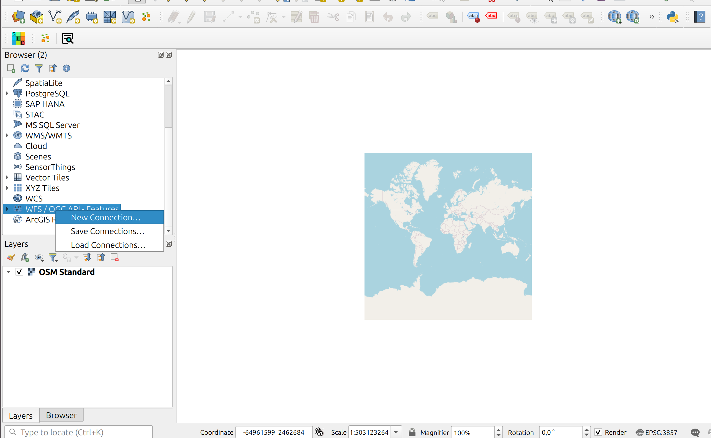
No passo seguinte, é aberta uma caixa de configuração para introduzir os dados da ligação. Na secção url deve ser introduzido o url da Landing Page da OGC API: https://ogcapi.dgterritorio.gov.pt/.
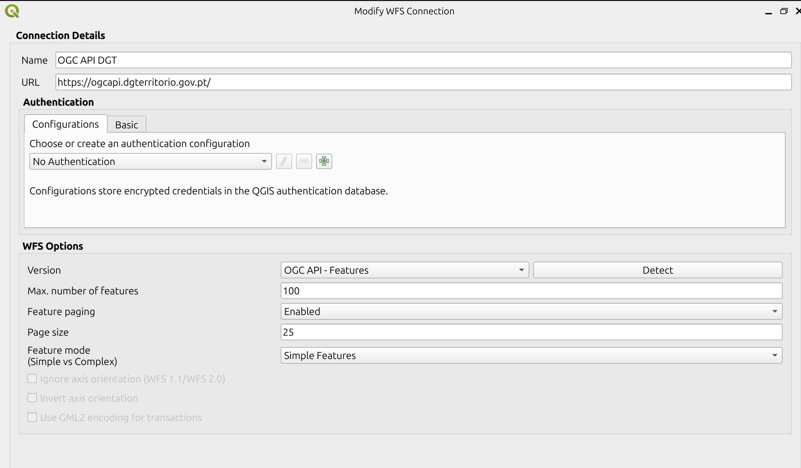
Tip
Opcões de WFS: para não sobrecarregar o QGIS e o servidor, recomenda-se estabelecer um número máximo de features, especialmente numa fase de exploração dos dados. Esse número pode ser sempre incrementado, se necessário. Para um número máximo de features de 100, com uma paginação de 25, o QGIS fará quatro pedidos ao servidor até satisfazer a quota máxima estabelecida de features; neste caso, 100.
Ao pressionar ok para fechar a caixa anterior, uma nova ligação aparecerá listada debaixo da secção "WFS/OGC API - Features", no browser panel. Ao carregar nesse item para expandir-lo irão aparecer todas as colecções de OGC API - Features, disponíveis no servidor.
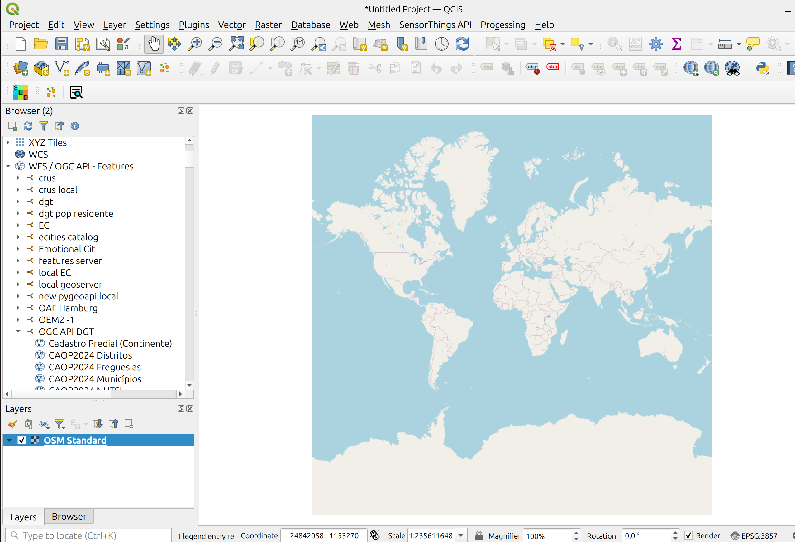
Qualquer uma destas colecções pode ser adicionada ao QGIS como layer, fazendo duplo click, ou carregando nela para chamar o menu de contexto e escolhendo "Add layer to project".
Tip
Para não sobrecarregar o QGIS e o servidor, recomenda-se aplicar filtros a coleções OGC API - Features antes de carregar a colecção. No caso de quereremos filtrar por um determinado atributo, podemos carregar no botão build query para construir o filtro. Se tivermos interesse por uma determinada área, a recomendação é de fazer zoom para a área de interesse antes de carregar a colecção e seleccionar a checkbox "Only select features overlaping the view extent".
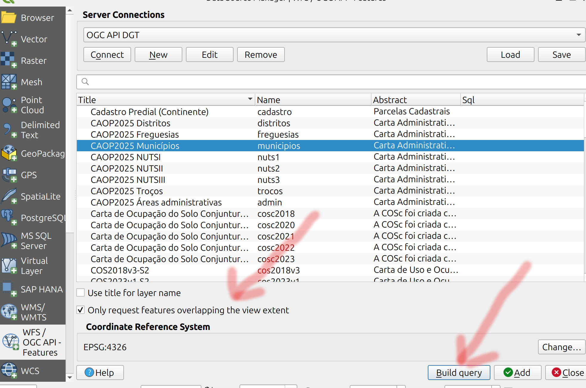
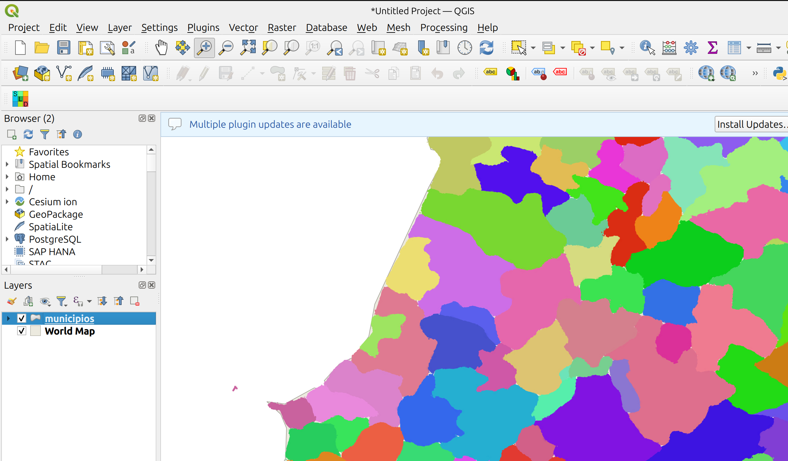
Tip
As colecções OGC API - Features também podem ser adicionadas através do top menu "Layer", escolhendo "Add Layer" e "Add WFS/OGC API - Features Layer".
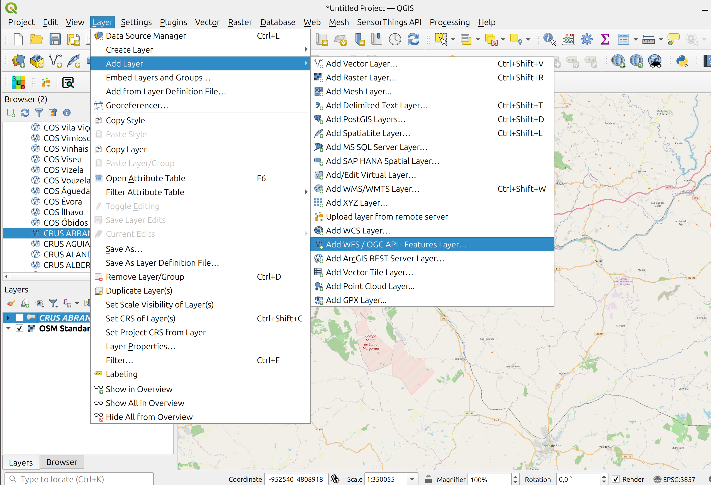
OGC API - Tiles
O QGIS permite adicionar tiles vetoriais com o formato OGC API - Tiles. No browser panel do lado esquerdo, carregar no item "Vector Tiles" para chamar o context menu e seleccionar "New generic connection".
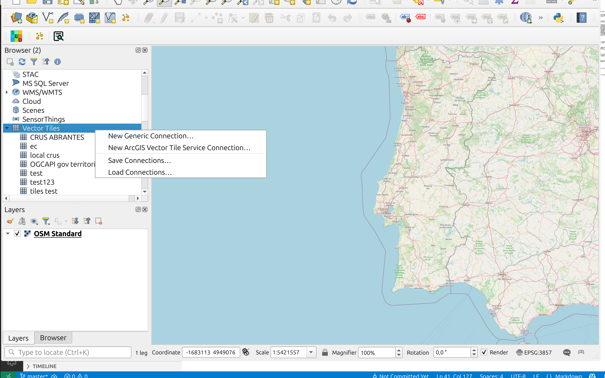
Na caixa de configuração deve-se indicar qual é o "source url" da colecção.
Tip
Para obter "source url" da colecção pode-se consultar o endpoint de tileset metadata. Depois de identificar a colecção de interesse, através do endpoint de colecções, carregar nessa colecção para obter a página da colecção. Por exemplo, se quiseremos os metadados de colecção de "CAOP2025 Municípios", podemos carregar nesse link que nos leva até: https://ogcapi.dgterritorio.gov.pt/collections/municipios. A última parte do url - municipios- é o nome da colecção.
Para aceder ao tileset metadata, podemos substituir o NOME neste url, por municipios:
https://ogcapi.dgterritorio.gov.pt/collections/NOME/tiles/WebMercatorQuad/metadata
Acedendo a url podemos consultar o Tile URL template.
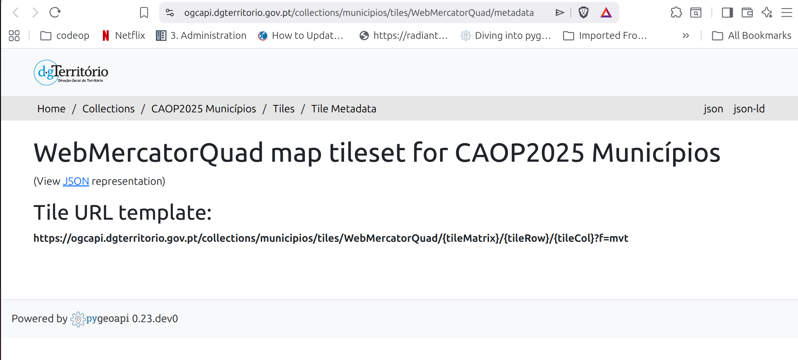
Podemos copiar este valor para o "source url" do QGIS, substituindo tileMatrix por z, tileRow por y e tileCol por x:
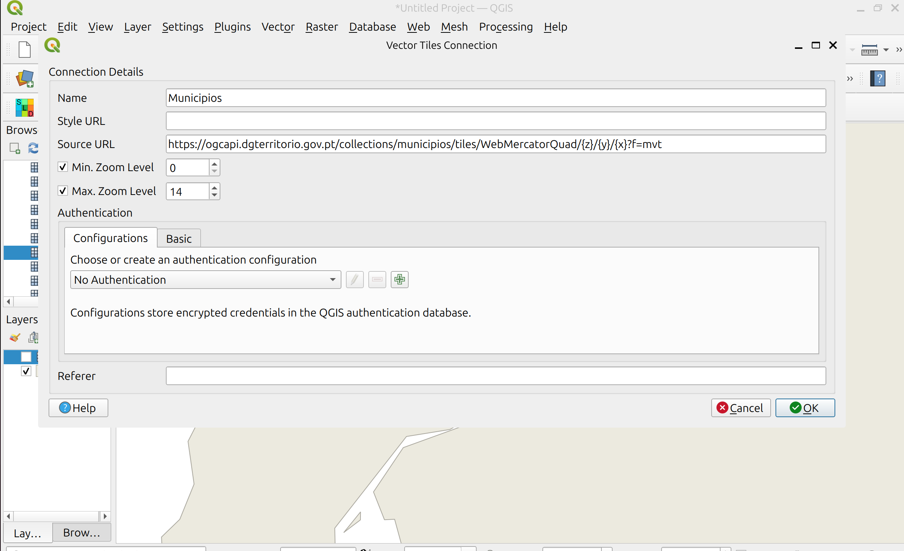
Depois de aceitar esta configuração, a colecção irá aparecer listada debaixo do item "Vector Tiles". Ela pode ser adicionada ao mapa, carregando para obter o context menu, e depois seleccionando "Add layer to project".
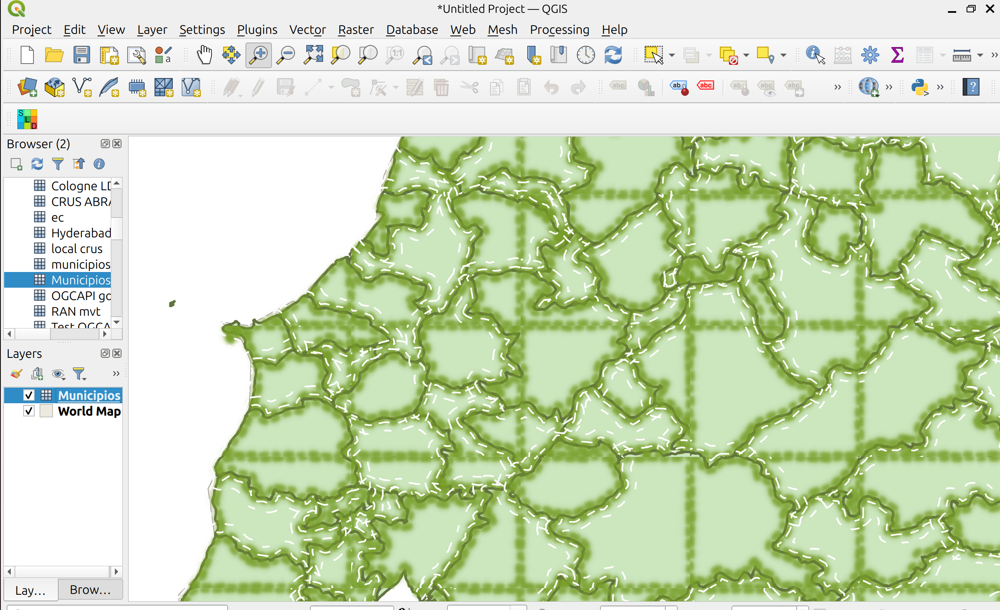
OGC API - Maps
Para acceder a colecções disponibilizadas como OGC API - Maps, começamos por identificar o endpoint da colecção através do endpoint de colecções. Por exemplo para o tema "OrtoSat 30 cm - Portugal Continental - 2023 (Cor Verdadeira)":
Através do menu "Layer", seleccionar a opção "Add Layer" e "Add Raster Layer".
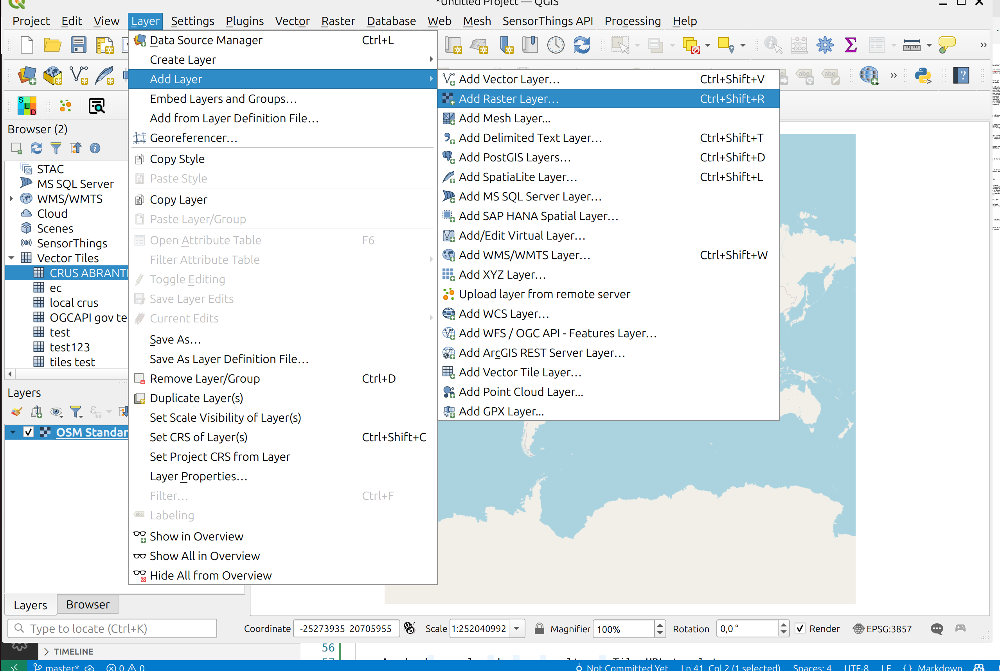
Na caixa de configuração, seleccionar o radio button "OGC API", que irá expandir um menu com opções de configuração.
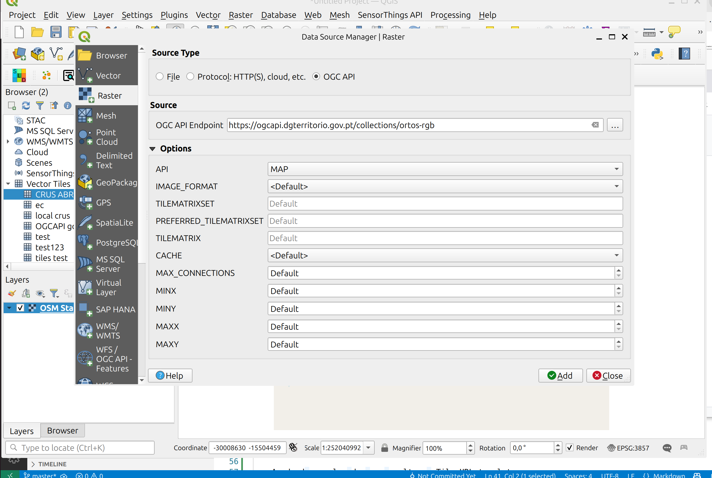
Na secção "OGC API - endpoint", deve-se preencher o url da colecção que identificámos acima e na API, escolher map. Todas as outras configurações são opcionais. Depois de aceitar esta configuração, a colecção será adicionada ao mapa.

OGC API - Records
Actualmente a DGT disponibliza duas colecções como OGC API - Records: o "Sistema Nacional de Informação Geográfica - SNIG" e o "Portal de Informação Territorial - PoInT". Os respectivos endpoints podem ser identificados endpoint de colecções.
Para visualizar uma coleção OGC API - Records no QGIS, podemos utilizar o core plugin MetaSearch, que já vem por defeito com a instalação do QGIS. É possível aceder ao plugin, através da opção "Web->MetaSearch->MetaSearch" no top level menu.
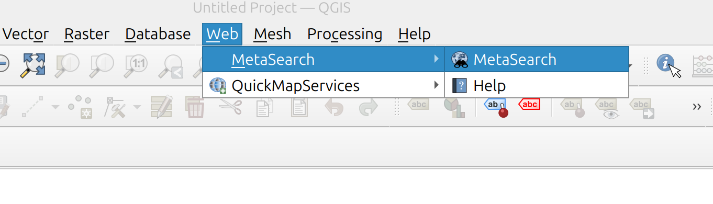
Carregar no botão new para adicionar um novo endpoint de Records, e na caixa de configuração, adicionar o url que identificámos na página de colecções.
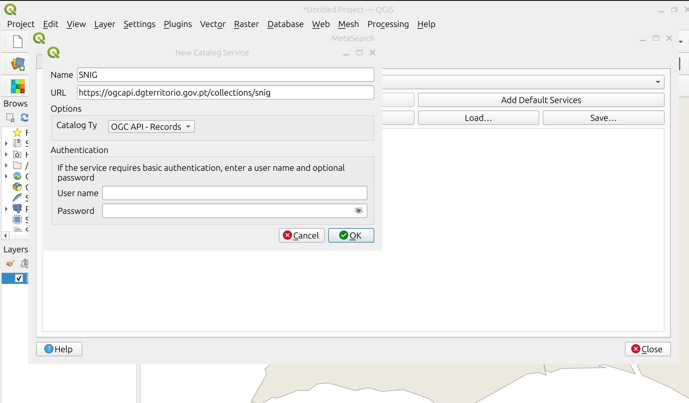
Ao pressionar Ok, este endpoint será adicionado á lista, e podemos carregar no botão service info, para obter informações sobre este serviço.
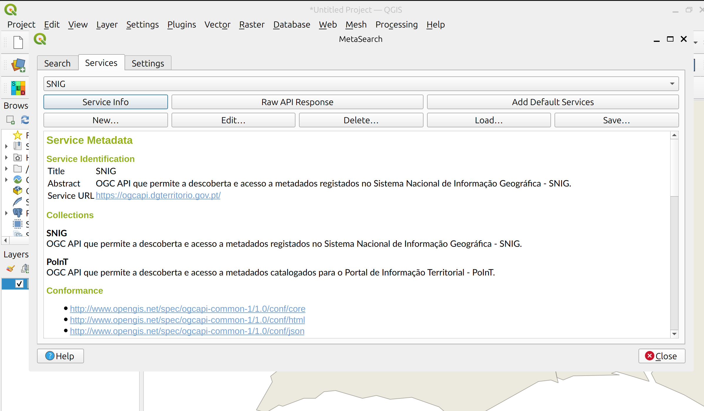
Warning
O QGIS poderá demorar algum tempo a fazer a comunicação, e perguntar ao utilizador se que esperar ou interromper o processo; para continuar, escolha esperar.
Na tab search temos a possibilidade de listar os registos do catálogo e aplicar filtros, por bounding box ou palavra chave.
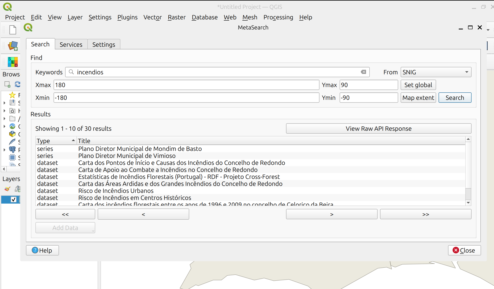
Carregue num registo para visualizar o seu conteúdo.
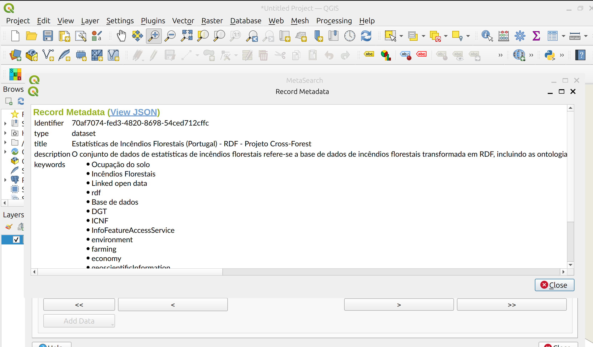